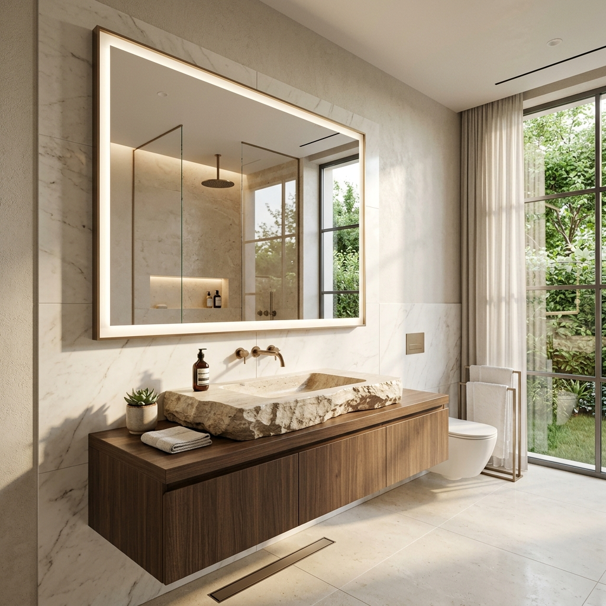
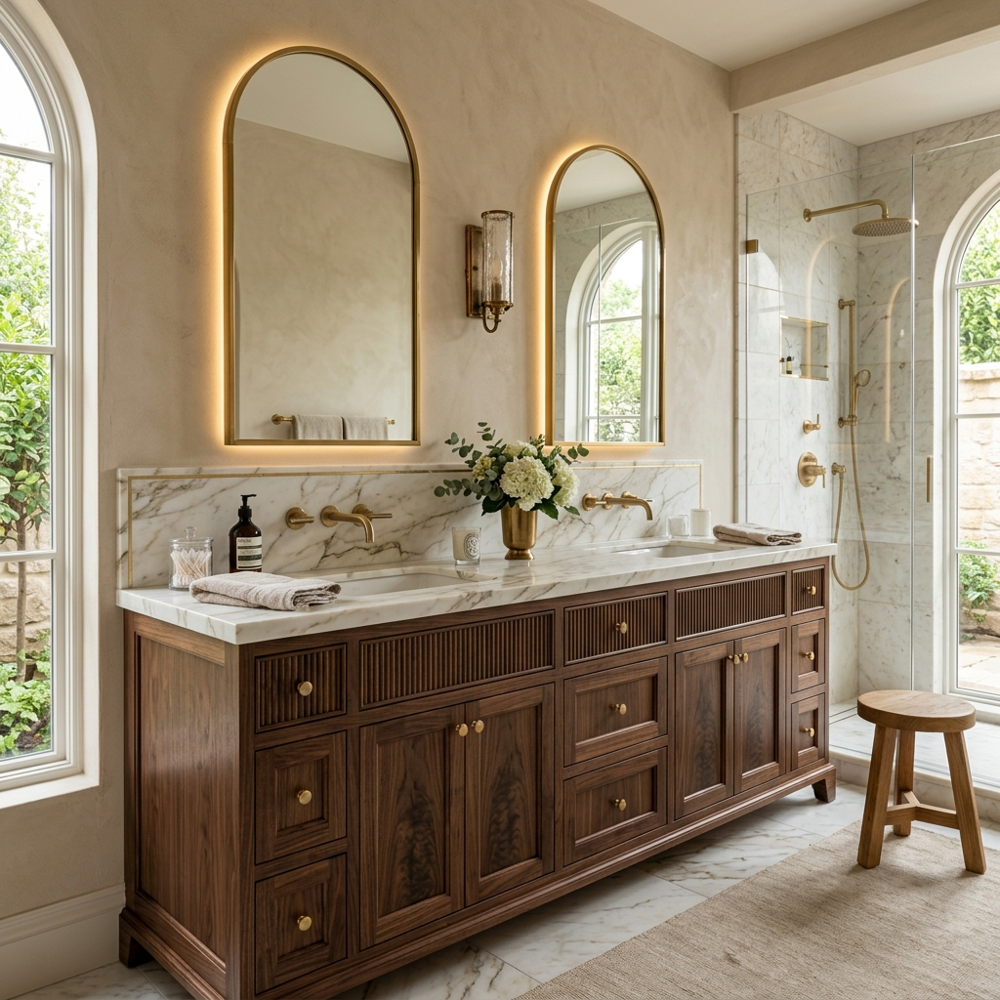
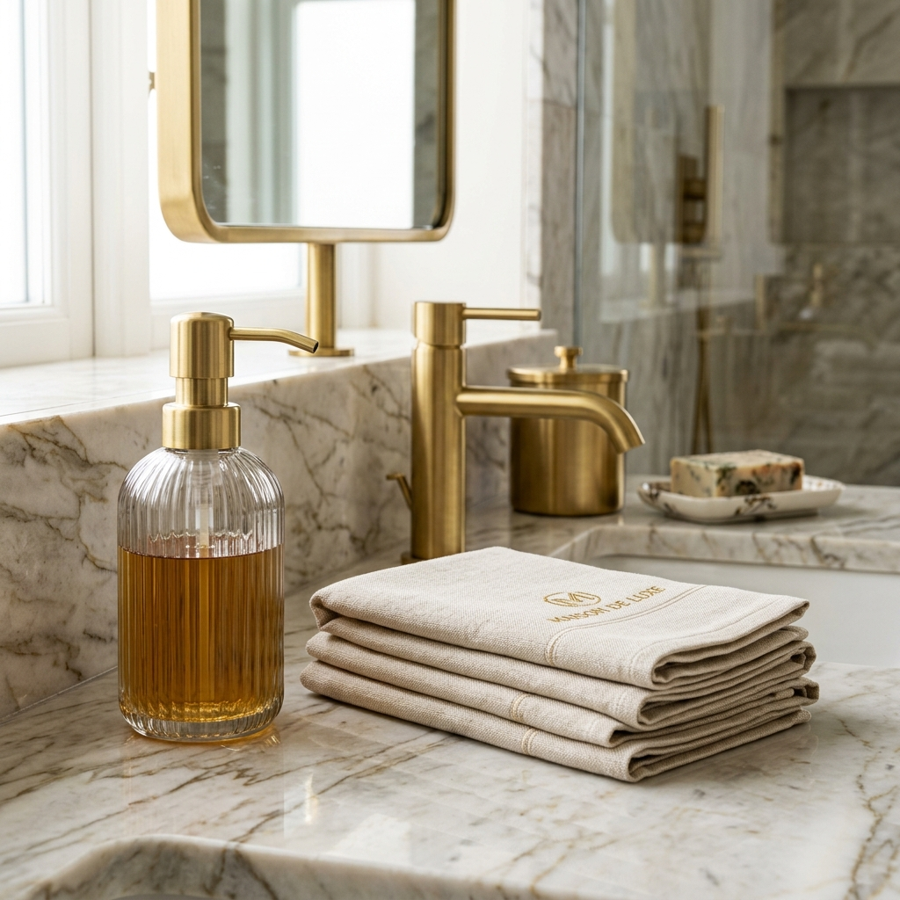

Un large choix de meubles et d'accessoires pour votre salle de bains
Nous travaillons avec un grand nombre de fabricants pour garantir que nous avons les derniers styles et les dernières tendances en matière de design. Nos conseillers experts sont également disponibles pour aider les clients à choisir ce qui conviendra le mieux à leur salle de bains.
Ensembles complets
Nous proposons une vaste sélection d’ensembles complets de meubles pour les salles de bains qui conviendront à tous les styles et à tous les budgets. Nos ensembles comprennent généralement des armoires de toilette, des meubles sous lavabo, des colonnes de rangement, des miroirs, des luminaires et des robinets.
Nous avons établi des partenariats avec de nombreux fabricants pour vous offrir une large sélection de styles et de designs pour votre salle de bains. Nous nous efforçons constamment de proposer les dernières tendances en matière de meubles et d’accessoires pour les salles de bains. Nos conseillers expérimentés sont également à votre disposition pour vous aider à trouver les meubles qui conviendront parfaitement à votre salle de bains.

Meubles
Si vous cherchez à acheter des meubles pour votre salle de bains, nous avons également une large sélection de meubles seuls qui conviendront à tous les styles et à tous les budgets. Nos meubles seuls comprennent généralement des armoires de toilette, des meubles sous lavabo, des colonnes de rangement et des étagères.
Notre vaste réseau de fabricants nous permet de proposer une grande variété de styles et de designs pour votre salle de bains. Nous sommes constamment à la recherche des dernières tendances en matière de meubles et d’accessoires pour les salles de bains pour répondre à vos besoins en matière de design. Nos conseillers experts sont là pour vous aider à choisir les meubles qui conviendront le mieux à votre salle de bains en fonction de vos goûts et de votre budget.

Accessoires de salle de bains
Nous proposons une large sélection d’accessoires pour les salles de bains pour compléter n’importe quel ensemble de meubles ou pour ajouter une touche finale à votre salle de bains. Nos accessoires comprennent généralement des porte-serviettes, des porte-savons, des porte-brosses à dents, des tapis de bain et des rideaux de douche.
Nous collaborons avec une multitude de fabricants pour vous offrir une vaste sélection de styles et de designs pour votre salle de bains. Nous sommes fiers de proposer les dernières tendances en matière de meubles et d’accessoires pour les salles de bains. Nos conseillers experts sont également disponibles pour vous guider dans votre choix et trouver les meubles qui conviendront parfaitement à votre salle de bains.

Besoin d'un conseil personnalisé ?
Nos experts sont là pour affiner votre choix et vous proposer un chiffrage précis.
Nous rendre visite en showroom